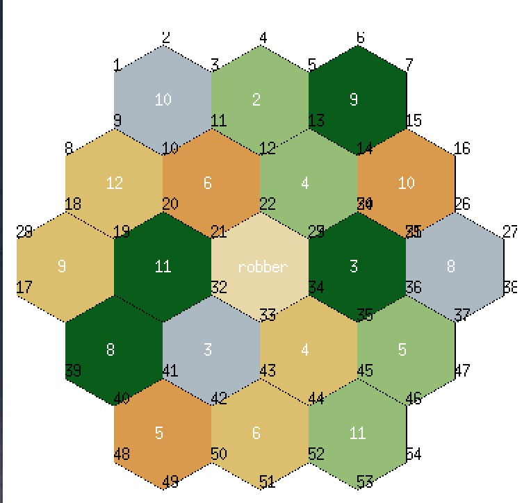

The following are projects I programmed for either personal enjoyment or final group projects for class.

This is a digital prototype of the popular boardgame "Settler of Catan."
A maximum of two players can play a full game on one screen within the
terminal and the help of a graphic to represent the state of the
board.
- Written in: OCaml
- Completed as a final project for CS 3110: Functional Programming at Cornell University
- Worked with 3 other students throughout a semester and adopted an Agile workflow.
- Specialized in the GUI (as pictured) and served as the project manager who organized
each project sprint.


This app displays the current weather of a given area and displays a cat to symbolize the conditions.
Also, includes forecast for the following two days.
- Written in: Swift
- Completed as a final project for CS 1998: Introduction to iOS Development at Cornell University
- Worked as the sole front-end developer with two other back-end developers and a designer
- Specialized in implementing the given design and incorportating the Weather API developed by my teammates.